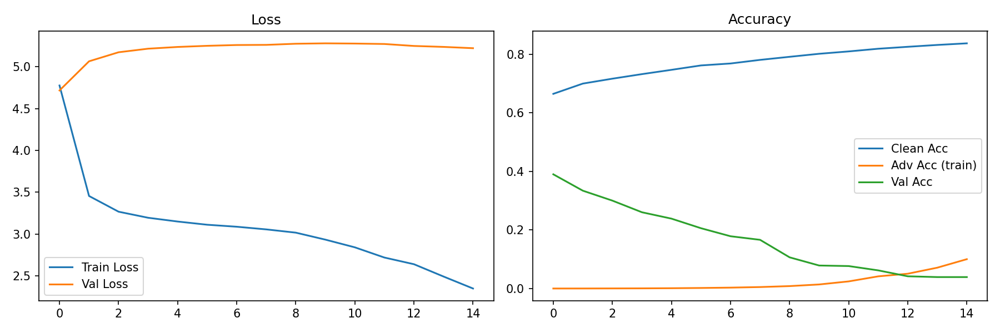
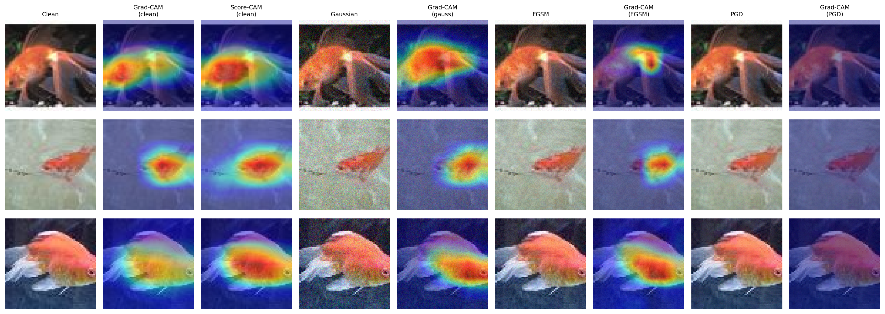
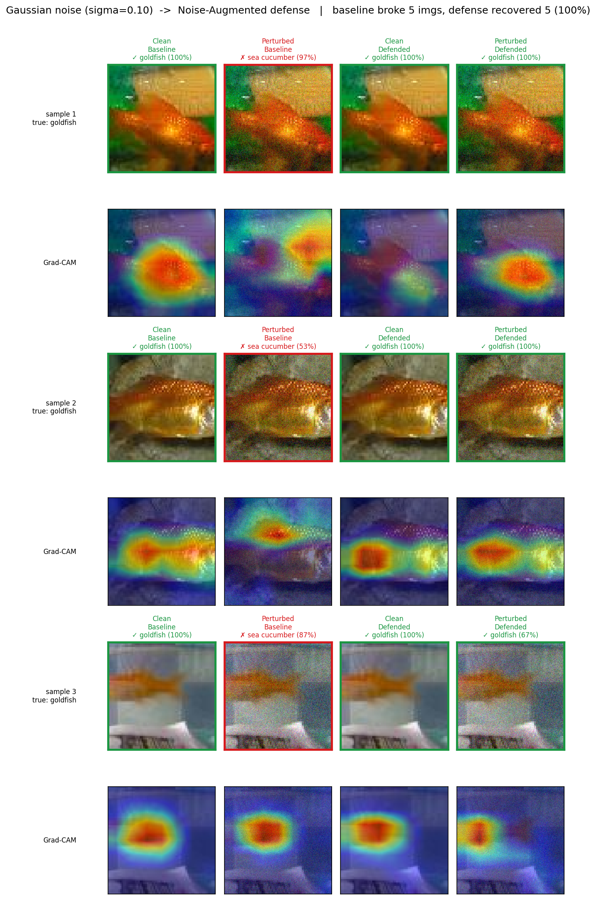
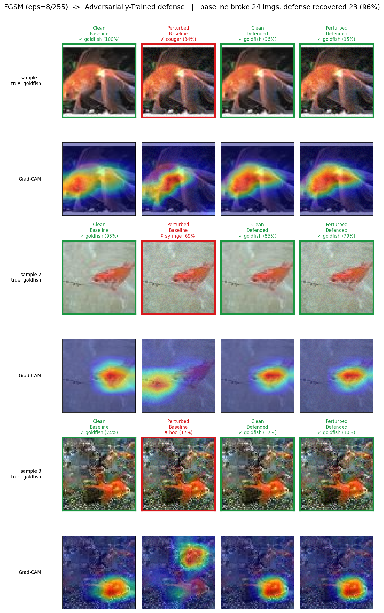
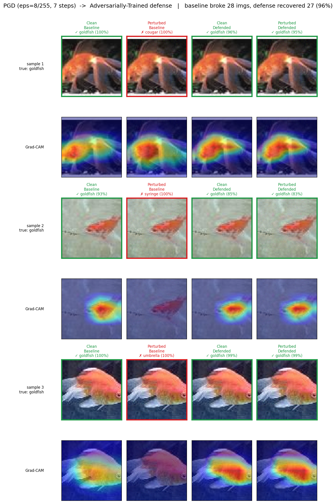

Project title: Adversarial Robustness of CNNs: Comparative Analysis of Gaussian Noise and Adversarial Attacks, Defense Strategies, and Explainability with Grad-CAM & Score-CAM.
The project measures how a transfer-learned ResNet-50 image classifier degrades under random (Gaussian) noise and under gradient-based adversarial attacks (FGSM, PGD). It compares three defenses (noise-augmented training, adversarial training, and test-time input denoising) and uses Grad-CAM and Score-CAM to check whether the model's visual explanations are faithful and stable when the input is perturbed.
| Student | |
|---|---|
| Abhijeet Bhattacharya | bhattacharya@oakland.edu |
Access to data. The project uses Tiny ImageNet (Stanford CS231n) [1], a public subset of ImageNet [2] with 200 object classes. The archive is downloaded directly from http://cs231n.stanford.edu/tiny-imagenet-200.zip and extracted to ./tiny-imagenet-200/ by the download step in final_project.py. No credentials or licensing agreement are required. The dataset contains 100,000 training images (500 per class) and 10,000 labelled validation images (50 per class). The official test split has no public labels, so the labelled validation split is the held-out evaluation set.
Data structures and formats. The data are RGB images stored as 64×64 JPEG files. Training images are organized as train/<wnid>/images/*.JPEG. Validation images come as one flat folder plus an annotation file, val_annotations.txt, that maps each file to its class WordNet ID. Labels are one-hot vectors over 200 classes. In memory, a batch is a float32 tensor of shape (32, 224, 224, 3).
Cleaning and reorganization. reorganize_val_folder() moves each validation image into a per-class subfolder (val/<wnid>/) using val_annotations.txt. This lets the training and validation splits load through the same Keras flow_from_directory pipeline with an identical class index.
Transformation and normalization.
rescale=1/255). All perturbations, clipping and ε budgets are defined in this [0, 1] space.Rescaling(255) followed by resnet50.preprocess_input). Attack gradients therefore flow through the normalization, and every input to the model stays in [0, 1].Augmentation. All training uses random horizontal flips. The noise-augmented defense also adds on-the-fly Gaussian noise (σ = 0.10 in [0, 1] units) to every training image, followed by clipping. Gaussian, FGSM and PGD perturbations for evaluation, and PGD examples for adversarial training, are generated on the fly per batch rather than stored on disk.
ImageDataGenerator (resize to 224×224, rescale to [0, 1], horizontal flip, optional σ = 0.10 noise)..weights.h5), result CSVs and figures. eval_only.py regenerates every table from the saved checkpoints without retraining.| Stage | Input | Output |
|---|---|---|
| Loader | JPEG files, wnid folders | x: (32, 224, 224, 3) float32 in [0,1]; y: (32, 200) one-hot |
| Model | x in [0,1] | softmax probabilities (32, 200) |
| Attack / noise | x, y, model (attacks need gradients) | x′, same shape; ‖x′−x‖∞ ≤ 8/255 for FGSM/PGD |
| Denoiser | x′ | filtered x′ (per-channel scipy.ndimage) |
| CAM | one image, target class, last conv layer (conv5_block3_out, 7×7×2048) | 224×224 heatmap in [0,1] |
| Evaluator | predictions vs. labels | accuracy rows → CSV |
Learning paradigm. The task is supervised multi-class image classification (200 classes) trained with categorical cross-entropy. Robustness is studied by perturbing the model's inputs at test time and, for two of the defenses, at training time.
Model. A ResNet-50 convolutional neural network [3] pretrained on ImageNet, followed by global average pooling, dropout and a 200-way softmax layer. The baseline is trained in two stages. Stage A freezes the backbone and trains the new head (Adam, lr 1e-4). Stage B unfreezes layers from index 140 onward and fine-tunes at lr 1e-5, with ReduceLROnPlateau, early stopping and best-checkpoint saving.
Attacks. FGSM [4] takes one signed-gradient step of size ε = 8/255. PGD [5] is the iterative version: random start in the ε-ball, 7 steps of α = 2/255, and projection back onto the L∞ ball and [0, 1] after every step. Both attacks are untargeted and maximize cross-entropy. As a non-adversarial baseline perturbation, i.i.d. Gaussian noise is added at σ ∈ {0.05, 0.10, 0.20}, a common corruption setting [6].
Defenses.
retrain_adversarial_v3.py) warm-starts from the baseline and uses: frozen BatchNorm (all BN layers kept in inference mode); the full backbone trainable; a mixed loss 0.5·CE(clean) + 0.5·CE(PGD); an ε-curriculum in which the PGD training budget ramps linearly 0 → 8/255 over the first 3 of 10 epochs; dropout 0.2; Adam at lr 2e-5. Each epoch is checkpointed on robust-validation accuracy (PGD at full ε = 8/255 on 20 validation batches), with early-stopping patience 3.Explainability. Grad-CAM [7] weights the last convolutional feature maps by their spatially averaged class-score gradients. Score-CAM [8] is gradient-free: it masks the input with each upsampled activation map (the 256 highest-activation channels here) and weights each map by the class score obtained. Faithfulness is measured with Average Drop % and Increase in Confidence % [9]. Stability is the Pearson correlation between the heatmap of a clean image and that of the same image with σ = 0.05 noise.
Why this approach suits the problem. Transfer learning from ImageNet gives a strong classifier on 64-px images within a course compute budget, and ResNet-50 is the standard backbone in the robustness literature, so results are comparable. FGSM and PGD are the canonical first-order white-box attacks; PGD in particular is the accepted strong baseline for L∞ robustness [5]. Gaussian noise is a natural control because it perturbs every pixel much more on average but contains no gradient information. The three defenses cover the main families (data augmentation, robust optimization and input transformation). CAM methods fit the convolutional backbone directly. Using one gradient-based and one gradient-free method separates real changes in the model's attention from artifacts of the gradients, which are themselves what adversarial attacks manipulate.
| Language | Python 3.10 |
| ML framework | TensorFlow 2 with Keras (Keras 3 API): keras.applications.ResNet50, ImageDataGenerator, tf.GradientTape for attacks and Grad-CAM, @tf.function custom training step for adversarial training |
| Scientific stack | NumPy; SciPy (scipy.ndimage.gaussian_filter / median_filter for denoising); pandas (result tables); Matplotlib (figures, heatmap overlays); tqdm (progress) |
| Development | Jupyter notebook (Final_Project.ipynb) for exploration, plus standalone scripts: final_project.py (full pipeline), retrain_adversarial.py / retrain_adversarial_v3.py (AT runs), eval_only.py (evaluation from checkpoints), qualitative_results.py (recovery figures) |
| Version control | Git |
| Hardware | 2× NVIDIA RTX 6000 Ada (48 GB) GPUs, with GPU memory growth enabled |
| Experiment tracking | File-based: CSV result logs in results/, weights-only .weights.h5 checkpoints in models/, fixed seed (42). No MLflow and no CI/CD pipeline; reproducibility relies on fixed configs in each script and on eval_only.py regenerating all tables. |
EVAL_BATCHES = 30) under: clean; Gaussian σ = 0.05/0.10/0.20; FGSM ε = 8/255; PGD ε = 8/255, 7 steps.Three models are compared under identical conditions. The Baseline (undefended transfer-learned ResNet-50) is the reference. The Noise-Augmented model is compared with it to isolate the effect of training on random noise. The Adversarially-Trained model shows the effect of robust optimization. Input denoising is compared as a model-agnostic add-on on top of each model. For explainability, Grad-CAM (gradient-based) is compared against Score-CAM (perturbation-based) on the same images and model.
| Model | Clean | Gauss σ=0.05 | Gauss σ=0.10 | Gauss σ=0.20 | FGSM | PGD |
|---|---|---|---|---|---|---|
| Baseline | 0.6812 | 0.5906 | 0.4708 | 0.1979 | 0.0229 | 0.0000 |
| Noise-Augmented | 0.6500 | 0.6427 | 0.6542 | 0.5240 | 0.0250 | 0.0000 |
| Adversarial (final, v3) | ≈0.62† | —‡ | —‡ | —‡ | —‡ | ≈0.13† |
Baseline and Noise-Augmented rows are copied verbatim from results/robustness_comparison.csv.
† Approximate values reported by the author for the final v3 adversarially trained model. They are not present in the project's result CSVs or logs and should be replaced by the output of eval_only.py.
‡ Not re-measured after final training. The Adversarial row currently in robustness_comparison.csv belongs to a superseded checkpoint (see Table 2) and is deliberately not reported here.
Adversarial training did not work on the first attempts. The failures are reported here because they explain the final design.
final_project.py. With BN layers updating on a mix of clean and PGD batches, the BN running statistics drifted toward the adversarial distribution. Over 15 epochs, training-set adversarial accuracy crept up to ≈0.10 while clean validation accuracy collapsed from ≈0.39 to ≈0.04 (Figure 2).retrain_adversarial.py, FINE_TUNE_AT = 140, lr 1e-5). Clean accuracy was preserved, but the model gained no PGD robustness and became hyper-brittle to random noise. Lacking the capacity to learn robust features, it only sharpened its decision boundary around clean points. The Adversarial row still stored in robustness_comparison.csv (Table 2) shows exactly this signature, so we attribute it to this superseded checkpoint.| Model | Clean | Gauss σ=0.05 | Gauss σ=0.10 | Gauss σ=0.20 | FGSM | PGD |
|---|---|---|---|---|---|---|
| Adversarial, run 2 (superseded) | 0.7083 | 0.0271 | 0.0031 | 0.0010 | 0.0073 | 0.0000 |
Verbatim from the "Adversarial" row of results/robustness_comparison.csv. Clean accuracy is higher than the baseline's, yet accuracy at σ = 0.05 is 0.0271 and PGD accuracy is 0: a brittle model, not a robust one. Re-running eval_only.py with the v3 weights will replace this row.

| Model | PGD | PGD + denoise | Recovered (Δ) |
|---|---|---|---|
| Baseline | 0.0000 | 0.2281 | +0.2281 |
| Noise-Augmented | 0.0000 | 0.2323 | +0.2323 |
| Adversarial (run 2, superseded)‡ | 0.0000 | 0.0427 | +0.0427 |
Verbatim from results/denoising_defense.csv. ‡ The Adversarial row was produced with the same superseded checkpoint as Table 2; the v3 model was not re-measured after final training.
Important: these numbers are not white-box robustness. Each perturbation was crafted against the baseline and then shown to the defended model (a transfer setting). Only images the baseline got right when clean but wrong when perturbed are counted, from a scan of up to 60 validation batches. The counts are small. White-box robustness is reported in Table 1.
qualitative_results.py; values from the figure titles of results/qualitative/*.png).| Perturbation (crafted on baseline) | Defended model | Baseline broken | Defense recovered | Recovery rate |
|---|---|---|---|---|
| Gaussian noise, σ = 0.10 | Noise-Augmented | 5 | 5 | 100% |
| FGSM, ε = 8/255 | Adversarially-Trained | 24 | 23 | 96% |
| PGD, ε = 8/255, 7 steps | Adversarially-Trained | 28 | 27 | 96% |
High transfer recovery is expected even without real robustness: a perturbation tuned to the baseline's gradients often fails to fool a different set of weights. These figures illustrate how attention recovers; they do not measure robustness.
| Method | Average Drop % ↓ | Increase in Confidence % ↑ | Stability corr. ↑ | n images |
|---|---|---|---|---|
| Grad-CAM | 29.039 | 25.000 | 0.826 | 40 |
| Score-CAM | 9.042 | 33.333 | 0.979 | 15 |
Verbatim from results/explanation_metrics.csv (rounded as in RESULTS_SUMMARY.md).

RQ1 (noise vs. attacks). Gaussian noise degrades the baseline gradually: 0.6812 clean → 0.5906 / 0.4708 / 0.1979 at σ = 0.05 / 0.10 / 0.20. Adversarial perturbations are far more damaging per unit of perturbation. FGSM at ε = 8/255 ≈ 0.031 (per-pixel change at most 0.031, smaller than the typical change at σ = 0.05) drops accuracy to 0.0229, and 7-step PGD drives it to 0.0000. Random noise has to be large to hurt; adversarial noise only has to be well aimed.
RQ2 (defenses). Noise-augmented training is very effective against its own threat: accuracy at σ = 0.10 rises from 0.4708 to 0.6542 and at σ = 0.20 from 0.1979 to 0.5240, at a clean cost of 3.1 points (0.6812 → 0.6500). It gives essentially no white-box adversarial robustness (FGSM 0.0250, PGD 0.0000). Adversarial training only worked with the v3 recipe and shows the expected trade-off: lower clean accuracy (≈0.62) for non-zero white-box PGD accuracy (≈0.13, author-reported; its Gaussian and FGSM accuracies were not re-measured). Test-time Gaussian denoising recovers about 23 points of PGD accuracy on the baseline and the noise-augmented model (0.0000 → 0.2281 / 0.2323). This is a non-adaptive evaluation: an attacker who differentiates through the filter would likely reduce this gain, so it is an upper bound.
RQ3 (Grad-CAM vs. Score-CAM). They differ clearly, and Score-CAM is better on all three measures. It is more faithful (Average Drop 9.04% vs. 29.04%; Increase in Confidence 33.3% vs. 25.0%) and more stable under mild noise (correlation 0.979 vs. 0.826). Grad-CAM's reliance on local gradients, the same signal adversarial attacks exploit, makes it noisier. Score-CAM costs roughly 256 forward passes per image, which is why it was scored on fewer images (15 vs. 40). With that small sample the difference should be read as indicative rather than conclusive.
Figures 4–6 show, for three samples each, the clean and perturbed image under the baseline and under the defended model, with a Grad-CAM row beneath each. As stated in Section 7.7, they are transfer, illustrative results, not white-box robustness. They were generated with the adversarial checkpoint that was in models/ when qualitative_results.py was run.


